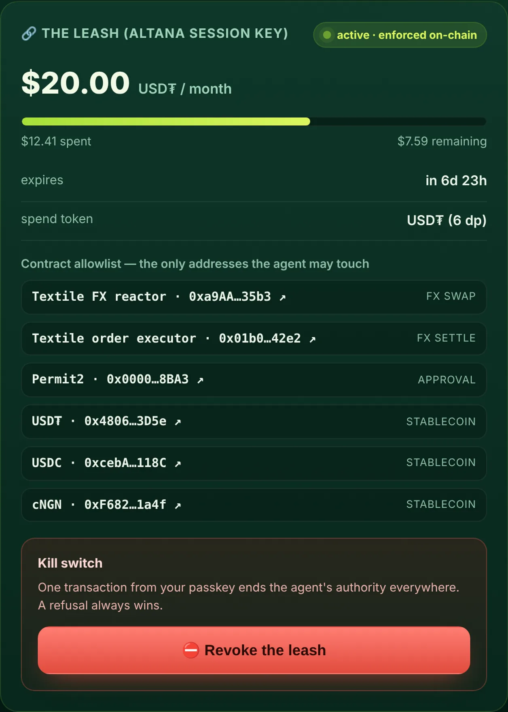
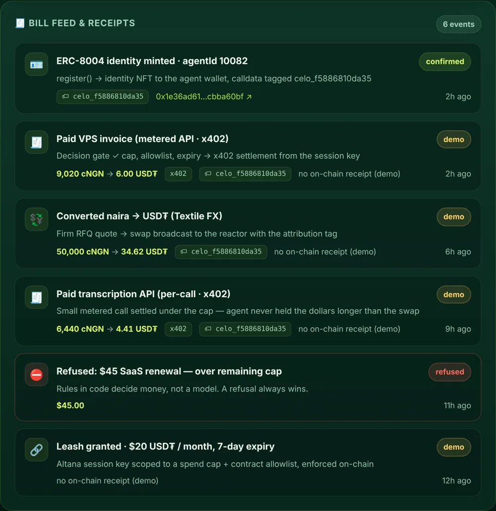
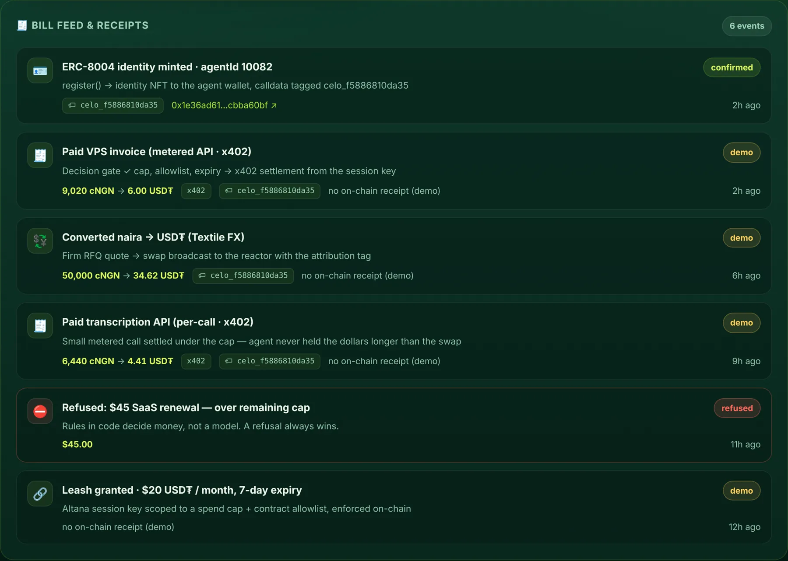

Celo mainnet · ERC-8004 #10082
An agent that pays your dollar bills
BillLeash converts local stablecoins to USD₮ on Textile FX and pays your dollar bills from a session key you can revoke in one transaction.
- Network
- Celo mainnet
- Spend cap
- You set it
- Every tx
- ERC-8021 tagged

How a bill gets paid
A dollar bill comes due. The agent gets a firm quote, swaps your local stablecoin to USD₮, checks the payment against the rules you set, settles it, and writes a receipt. Every step runs on Celo, every transaction tagged.
- Converts on Textile FXone firm quote, one tagged swapUSD₮
- Pays over x402per call, from the session keyx402
- Refuses over the caprules decide, a refusal winsGate
- Paid a VPS invoice9,020 cNGN converted, $6.00 settled over x402
- Converted naira to USD₮50,000 cNGN → 34.62 USD₮ on Textile FX
- Refused a $45 renewalOver the monthly cap. A refusal always wins.
Cut the leash in one transaction
Revoke the agent's session key in one on-chain transaction. After it confirms, its next payment reverts at validation. The spend cap, the contract allowlist and the expiry are enforced by the wallet, not by our code.
Eight corridors into dollars
Earn in naira, rupiah or pesos; pay in USD₮. BillLeash reads each token's own decimals, so the amounts stay exact: cNGN has 6, IDRX 2, wARS 18.
- Nigerian nairacNGN1,446 / $1
- Indonesian rupiahIDRX15,850 / $1
- Argentine pesowARS1,015 / $1
- Colombian pesowCOP3,910 / $1
Rates are live Textile FX previews, verified on Celo mainnet.

Questions
Does BillLeash hold my money?
No. You keep the admin key; the agent holds only a session key scoped to a spend cap, a contract allowlist and an expiry. Revoke it and the agent can spend nothing.
What keeps spending under the cap?
A per-period cap and a contract allowlist, enforced on-chain by the Altana wallet. The agent also checks each bill against the rules first, so an over-cap payment is refused before it is sent.
How are bills paid?
Metered APIs are paid per call over x402; card subscriptions go through Agent Vault, where the agent never sees the card number. Every swap it broadcasts carries the attribution tag.
Is the agent live on Celo mainnet?
Yes. The identity is registered on Celo mainnet as ERC-8004 agentId 10082, and the Textile FX rates on the dashboard are live previews from the chain.
A receipt for every bill
The agent holds a human-backed identity on ERC-8004, and every transaction it broadcasts carries an ERC-8021 attribution tag. Each swap and payment lands on Celoscan, so the whole trail is public.
- ERC-8004 identityagentId 10082, owned by the agent walletOn mainnet
- Attribution tagcelo_f5886810da35, in every tx's calldataERC-8021
- Non-custodialthe agent holds only a capped session keyBy design
